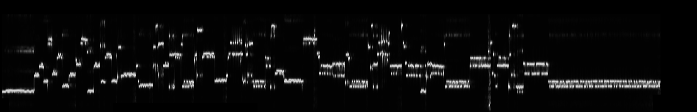
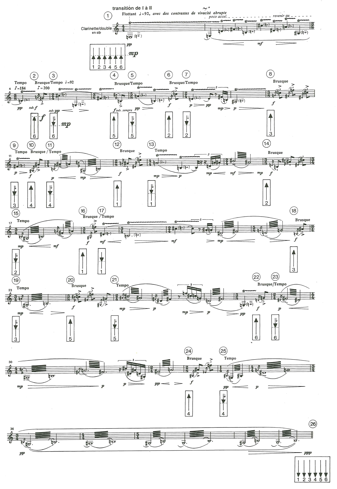

Transition I–II
Foreground and background
Example nowSurrounding background
Next changeSpeaker 6


The cue guide follows the existing example timing. Exact alignment to the printed score is still under review; scroll the score at your own pace.
Hold keys 1–6 or touch pads to bring speakers forward. Release to return to the surrounding background.
Move with W A S D; turn with J / L or drag the room. The buttons also work by touch.
The blue circle follows the surrounding sound. Amber pulses show brief accents above it.
Example mix · surrounding background
About this excerpt and preview
This study lets you listen to the example, change listening position, or perform the spatial mix yourself. Switching experiences keeps your place in the recording. Use headphones.
Transition I–II contrasts a quieter background on all six speakers with foreground gestures. Read Andrew Gerzso’s IRCAM analysis.
Preview 04 focuses on this one excerpt. It restores the earlier prototype’s paired accent and release timings; musical timing, score alignment, and asset credits still require final review. The position model is an educational approximation.